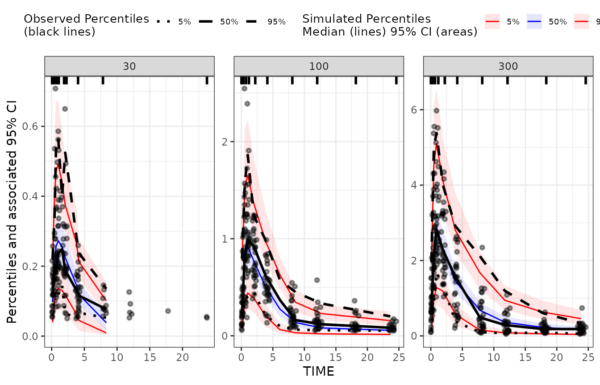

VPC Simulations
Philip Delff
September 11, 2026 using NMsim 0.2.8
Source:vignettes/NMsim-VPC.Rmd
NMsim-VPC.RmdSimulations for Visual Predictive Checks (VPC)
This vignette shows how to generate simulations for generation of VPC
plots. While NMsim does not include any functionality for
summarizing quantiles or plotting, it provides a powerful and simple
interface to obtain the simulations. We shall see how the
tidyvpc package easily creates VPC plots based on the
simulation results from NMsim. There are other R packages
available for summarizing and plotting VPC’s that could be used instead
of tidyvpc.
Default Option: Reuse Estimation Data for Simulation
Normally, the two main arguments to NMsim() are the path
to the input control stream (file.mod) and the simulation
input data set (data). But if we leave out the the
data argument, NMsim will re-use the estimation data for
the simulation. That is the simulation we need for a (in-sample) VPC. We
will use an example model included with NMsim:
file.mod <- system.file("examples/nonmem/xgxr032.mod",package="NMsim")
NMdataConf(path.nonmem="/opt/NONMEM/nm75/run/nmfe75")
NMdataConf(dir.sims="simtmp-VPC",
dir.res="simres-VPC"
)
## notice the data argument is not used.
simres.vpc <- NMsim(file.mod,
table.vars=c("PRED","IPRED", "Y"),
name.sim="vpc_01",
seed.R=43,
subproblems=500
)The performed simulation is similar to the one produced by the
VPC function in PSN. However, there are some
important differences.
The simulation results are automatically read into R.
The
table.varsargument allows the user to narrow down the variables to be written to disk. This can speed up the simulation considerably and reduce the amount of disk space the Nonmem simulation results require.No postprocessing of the results is being done by
NMsim. See below how to easily do that.
Post-processing and Plotting using tidyvpc
As mentioned, NMsim does not postprocess the simulation
for generation of a VPC plot, nor does it offer any plotting functions.
The R package called tidyvpc offer those two things. The
following simple code shows how to get from the results from
NMsim to the VPC plot with tidyvpc.
library(ggplot2)
library(tidyvpc)
#> tidyvpc is part of Certara.R!
#> Follow the link below to learn more about PMx R package development at Certara.
#> https://certara.github.io/R-Certara/
library(NMdata)
## read the data as it was used in the Nonmem model
res <- NMscanData(file.mod,quiet=TRUE)
## only plot observation events from estimation data set
data.obs <- subset(res,EVID==0)
## Only plot simulated observation events
data.sim <- subset(simres.vpc,EVID==0)
## run vpc
vpc1 <-
observed(data.obs, x = TIME, y = DV) |>
simulated(data.sim, y = Y) |>
stratify(~DOSE) |>
binning(bin = "ntile", nbins = 9) |>
vpcstats()
plot(vpc1)
Use a different input data set
In the first example we used the exact same data as was used for the estimation. This is a common way to produce a VPC, and we saw the advantage that the user does not risk making mistakes in preparing the data set for the simulations. However, it may be of interest to include additional data or even a different data set in the simulation. It could be including data points that were excluded in estimation (like samples below the quantification limit) or a separate study that was not included in the model. There are at least two ways you can achieve this
Change the ACCEPT/IGNORE statements for the simulation run
This is easy, and you still get the benefit of not reading the data, with risk of making mistakes when manually subsetting it.Read the input data set from the estimation model and subset manually
The manually subsetted data set is then passed toNMsim()in thedataargument.
Change the ACCEPT/IGNORE Statements
NMsim provides a simple interface to modify the data filters
(ACCEPT/IGNORE). First we read them into a
data.frame.
filters <- NMreadFilters(file.mod,as.fun="data.table")
filters| type | class | cond |
|---|---|---|
| IGN | single-char | @ |
| IGN | var-compare | FLAG.NE.0 |
| IGN | var-compare | DOSE.LT.30 |
There is an exclusion FLAG.NE.0. The way this is used in
this case is that FLAG is non-negative, besides 0 which is the analysis
set, FLAG=10 is the smallest values, and that’s the BLQ’s.
A more common way to handle this would be to have an exclusion based on
BLQ.NE.0. Anyway, we simply edit that filter and re-run the
simulation:
filters[cond=="FLAG.NE.0",cond:="FLAG.GT.10"]
filters| type | class | cond |
|---|---|---|
| IGN | single-char | @ |
| IGN | var-compare | FLAG.GT.10 |
| IGN | var-compare | DOSE.LT.30 |
set.seed(43)
## notice the data argument is still not used.
simres.vpc.filters <- NMsim(file.mod,
table.vars=c("PRED","IPRED", "Y"),
name.sim="vpc_02",
subproblems=500,
filters=filters
)The plotting can be done the same way. This time we extract the
observations from the simulation results (from the preserved
DV column, not from any of the simulated columns)
## read the data as it was used in the Nonmem model
res <- simres.vpc.filters[simres.vpc.filters$NMREP==1,]
## only plot observation events from estimation data set
data.obs <- subset(res,EVID==0)
## Only plot simulated observation events
data.sim <- subset(simres.vpc.filters,EVID==0)
## run vpc
vpc1 <-
observed(data.obs, x = TIME, y = DV) |>
simulated(data.sim, y = Y) |>
stratify(~DOSE) |>
binning(bin = "ntile", nbins = 9) |>
vpcstats()
plot(vpc1)